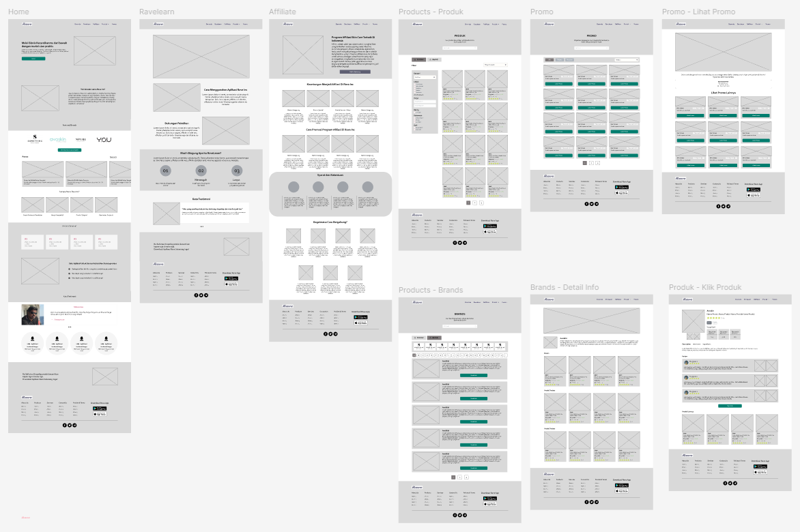

MVP Website B2B Skincare
Meningkatkan Akuisisi Mitra Bisnis Melalui Desain yang Meyakinkan.
Jenis Projek
Projek Tim (Studi Independen)
Peran Saya
Web UI Designer, Web UX Designer
Durasi Proyek
8 Minggu (Juni - Juli 2022)
Alat yang Digunakan
Figma, Trello, Zoom, Figjam
Tantangan
Sebuah brand skincare premium memiliki produk yang sangat baik namun penjualannya masih sangat bergantung pada tim sales offline. Mereka tidak memiliki "wajah digital" yang mampu menarik calon mitra bisnis (reseller, klinik) secara online. Informasi produk tersebar dan tidak ada satu tempat pun bagi calon mitra untuk memahami keunggulan brand dan produk yang ditawarkan.
Tujuan: Merancang landing page yang berfungsi sebagai "etalase digital" untuk membangun citra brand, menampilkan katalog produk, dan yang terpenting menghasilkan prospek dari calon mitra bisnis yang berkualitas dengan mempromosikan aplikasi Rave untuk melakukan transaksi sebagai reseller atau mitra.
Proses Desain Saya
Riset
Memahami pengguna dan kompetitor.
Definisi
Membuat persona dan problem statement.
Ideasi
Wireframing dan user flow.
Desain & Prototyping
Membuat desain hi-fi dan prototipe interaktif.
Wireframes
Setelah memahami masalah, saya membuat user flow untuk menyederhanakan proses transfer. Kemudian, saya membuat wireframe low-fidelity untuk fokus pada tata letak dan fungsionalitas sebelum masuk ke desain visual.
Prototipe Interaktif
Saya menerapkan desain visual yang bersih, modern, dan mudah diakses. Palet warna ungu memberikan kesan girly dan penggunaan warna putih yang dominan tetap memberikan kesan profesional dan bersih, sementara tipografi yang jelas memastikan keterbacaan. Komponen interaktif dirancang untuk memberikan umpan balik yang jelas kepada pengguna.
Hasil & Pembelajaran
Setelah dilakukan user testing, landing page ini berhasil menrespon positif dari pengguna, pengguna yang menggunakan web ini merasa ini adalah web yang sangat informatif dan lengkap untuk dipakai sebagai media promosi aplikasi mobile dan juga sebagai katalog produk yang sangat detail.
Pelajaran utama: Untuk landing page B2B, membangun kredibilitas melalui desain profesional dan alur informasi yang logis adalah kunci. Setiap bagian harus memiliki tujuan yang jelas untuk memandu pengunjung menuju satu aksi utama, yaitu mengarahkan untuk mengunduh aplikasi mobilenya.